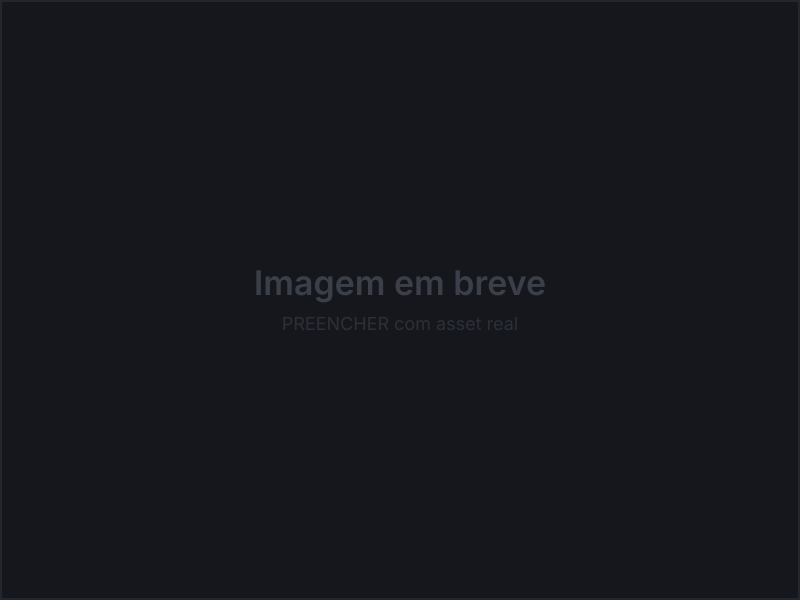

Ativações de marca em eventos, agrupadas pela etapa em que o público está: cadastro, jogo, presença de marca e dados.
1 · Entrada e cadastro
Formulários, consentimento e identificação em totens e telas grandes.
2 · Interação
Jogos promocionais, recompensas e telas touch no stand.
Demo jogável: Jogo da Memória São Braz
Recriação funcional do totem, com a arte original da campanha. Jogue aqui →
3 · Presença de marca
A identidade da marca aplicada em campanha e grandes formatos.
4 · Dados e operação
Dashboards e telas administrativas para a equipe acompanhar os números da ação.
Projetos em destaque
Perdigão
O participante se cadastra e joga no totem. Os dados vão para um dashboard que a equipe acompanha durante a ação.
Colabe Pippo’s
Campanha com dashboard de participação e coleta de dados.
Totem Paratiisi
Interface para TV em stand. O trabalho aqui foi de escala: tamanho dos componentes e texto legível de longe.
Forró Hero Caixa
Jogo para evento da Caixa. Desenhei a mecânica, o fluxo, a interface e o feedback visual.
Galeria
Petrobras · Sempre Livre · Corona · Quiz Condor · Quiz H2OH! · Jogos da memória · Roleta São Braz
